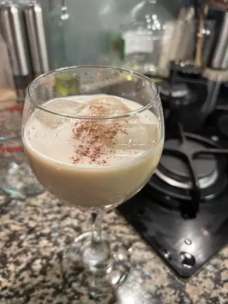

Coquito

Description :
Coquito is a traditional holiday drink that originated in Puerto Rico. In Spanish, coquito means "little coconut."
The beverage is coconut-based and spiked with rum. Rich and creamy coquito, which is often thickened with egg yolks, is similar to eggnog.
In fact, sometimes it's referred to as "Puerto Rican eggnog.
Ingredient :
- Evaporated milk
- Eggs
- Cream of coconut
- Sweetened condensed milk
- White rum
- Water
- Vanilla
- Spices
Steps :
- Cook the evaporated milk and egg yolks in a double boiler until thick.
- Transfer the mixture to a blender and blend with the remaining ingredients.
- Transfer to glass bottles and refrigerator until cold.